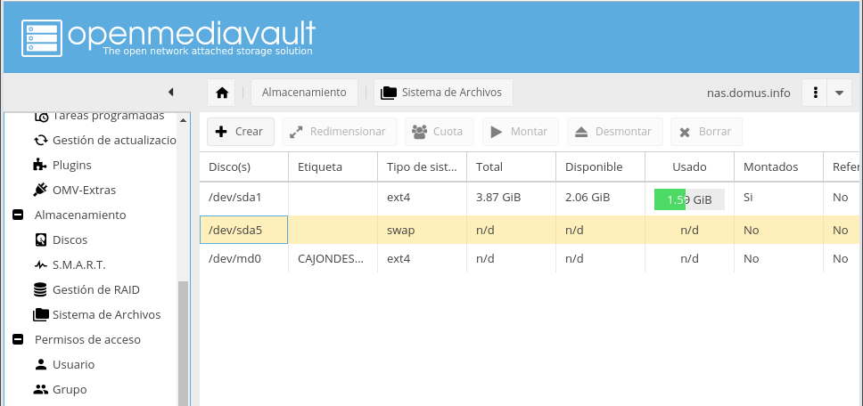
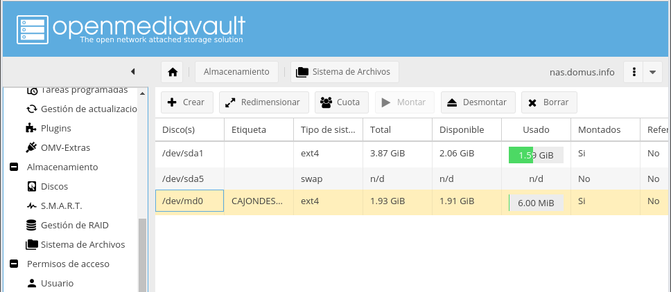
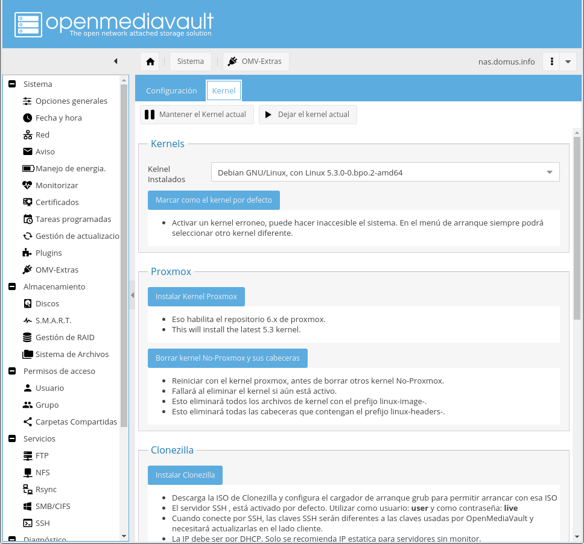

9.3. NAS con Open Media Vault¶
Open Media Vault es una distribución basada em Debian[1] orientada a la implementación de servidores NAS. Es quizás junto a FreeNAS y XigmaNAS (antes NAS4Free) el software más usada para la creación de un servidor NAS, pero presenta la ventaja de que sopora, además de x86-64, plataformas ARM, lo que la hace apta para convertir en NAS a una Raspberry Pi. Está, además, basada en Debian frente a las otras, que se basan en FreeBSD, lo que para nosotros es una ventaja, si necesitamos cacharrear a bajo nivel. Por contra, no trae de serie ZFS como las otras dos, por lo que si queremos utilizar este sistema de ficheros para contruir el NAS, necesitaremos instalr algún extra. Es cierto también que, si no se usa ZFS los requerimientos de memoria son menores, por lo que podemos utilizarla sobre hardware más modesto.
Nota
En principio, también puede instalarse el software de OMV sobre una debian ya instalada. Consulte este mensaje para ver el procedimiento.
9.3.1. Instalación¶
La instalación es idéntica a la de Debian, salvo por el hecho de que algunas partes de la instalación se llevan a cabo automáticamente y no se crea usuario sin provilegios por no ser necesario.
Es importante tener presente algunas consideraciones:
- Debemos instalar el sistema en un disco y dejar los restantes para almacenamiento (muy probablemente constituyendo un RAID).
- Si queremos usar ZFS necesitaremos al menos 8GiB de memoria RAM.
- La instalación crea una partición de swap del mismo tamaño que la memoria RAM, por lo que necesitaremos un disco para el sistema que supere en 4GiB el tamaño de la RAM. Por ejemplo, si la memoria es de 16GiB, necesitaremos un disco de 20GiB.
Teniendo presente esto y conociendo la instalación de Debian (y aun sin conocerla), el proceso de instalación es sumamente sencillo.
Al término y tras arrancar el sistema, podremos:
Entrar directamente en el sistema con el usuario root.
Acceder mediante SSH con el usuario root.
Nota
El acceso mediante contraseña está habilitado, por lo que sería más conveniente configurar el acceso por clave pública y permitir el acceso sólo mediante ella.
Acceder a la interfaz web mediante el usuario admin con contraseña openmediavault.
Advertencia
Asegúrese. a través de la propia interfaz web. de cambiar esta contraseña predefinida..
Extras
Si queremos los extras, debemos entonces hacernos con ellos e instalarlos. La instalación está disponible en este repositorio de Github, pero puede llevarse a cabo automáticamente desde la consola con el usuario administrador:
# wget -O - https://github.com/OpenMediaVault-Plugin-Developers/packages/raw/master/install | bash
Más adelante, volveremos a los extras para habilitar y usar ZFS.
9.3.2. Configuración¶
Se lleva a cabo a través de una interfaz web desde la cual se pueden poner en marcha muchos servicios accesorios (incluso Bittorrent). Lo básico, sin embargo, es que sirva como servidor NAS para lo cual se requiere:
- Preparar convenientemente los dispositivos de almacenamiento.
- Establecer un control de accesos para los datos.
- Hacer accesibles estos datos al resto de máquinas.
9.3.2.1. Dispositivos¶
Nuestro primer propósito, muy probablemente sea constituir un RAID con los
dispositivos de almacenamiento a través de la entrada Almacenamiento>Gestión
de RAID. Como en nuestro sistema disponemos de tres, constituiremos un RAID
5:
Como estamos en Debian y no usamos ZFS, este RAID se ha construido con
mdadm y la consecuencia es que aparecerá un dispostivo
/dev/md0:
En este punto, a no ser que queramos generar particiones y crear los sistemas de
ficheros recurriendo a la consola, podremos únicamente constituir un nuevo
sistema de ficheros sobre todo el RAID a través de la sección
Almacenamiento>Sistema de archivos:

Lo que generará un nuevo sistema de ficheros apto para ser montado:
y que puede montarse a través de la misma página:
Aunque pueda parecer que con esto basta, ya que el sistema de archivos está
montado sobre el árbol de directorios, aún es necesario identificar qué sistemas
se harán accesibles al resto de equipos. Ello implica acudir a la sección
Permisos de acceso>Carpetas compartidas:

Esto, sin embargo, no implica que los archivos sean accesibles, porque aún hay que compartirlos a través de algún sistema de archivos en red.
9.3.2.2. Usuarios¶
Pueden crearse grupos y usuarios a través de Permisos de acceso>Usuario y
Permisos de acceso>Grupo respectivamente. Estos usuarios y grupos son
usuarios locales[2], por lo que no tiene excesivo secreto su creación:
El grupo predeterminado para los usuarios es el grupo users, ya definido en Debian con GID 100.
9.3.2.3. Permisos¶
Los permisos se aplican como reglas ACL sobre el sistema de
ficheros a través de la sección de Permisos de acceso>Carpetas compartidas,
pinchando sobre ACL:

Es obvio que la parte inferior de la ventana emergente son los permisos UGO y la parte superior sirve para definir las reglas ACL para usuarios y grupos concretos.
9.3.2.4. Compartición¶
Definidos cuáles son los sistemas de archivos compartibles y cuáles serán sus permisos de acceso, el último paso es compartirlos de forma efectiva bien a través de CIFS (para sistemas Windows y Linux), bien a través de NFS (si nuestros clientes son exclusivamente Linux). En ambos casos es necesario desde el servicio correspondiente, habilitarlo:

y compartirlo:

Hecho esto ya tendremos el RAID5 accesible desde los clientes:
$ smbclient -U zicotropico -L //192.168.0.16
Enter WORKGROUP\zicotropico's password:
Sharename Type Comment
--------- ---- -------
CAJONDESASTRE Disk Cajón de sastre compartido con SAMBA
IPC$ IPC IPC Service (nas server)
y podremos acceder a él según nuestro nivel de permisos:
$ smbclient -U zicotropico //192.168.0.16/CAJONDESASTRE
smb: \> put FicheroEnElCliente.txt
putting file MensajeGrupo.txt as \MensajeGrupo.txt (213,5 kb/s) (average 213,5 kb/s)
smb: \> ls
. D 0 Sun Jan 12 09:05:14 2020
.. D 0 Sat Jan 11 19:25:25 2020
FicheroEnElCliente.txt N 4154 Sun Jan 12 09:05:14 2020
2027408 blocks of size 1024. 2004864 blocks available
9.3.3. ZFS¶
ZFS tiene la ventaja de incorportar la capacidad de crear RAIDs dentro del propio sistema de ficheros, lo que le permite mejorar los rendimientos de escrituras en RAID 5 y 6. Esto, sin embargo, se hace a costa de usar caché y, en consecuencia, requerir grandes cantidades de memoria RAM. Por ello, si nuestra intención es usarlo, debemos disponer al menos de 8GiB, que es el requisito mínimo en otros sistemas como FreeNAS.
Como ZFS no está disponible directamente en Debian, por incompatibilidad con su licencia, no lo provee el instalador y debe instalarse más tarde por sí está disponible como paquete. Esta cirtcunstancia afecta a OMV, que también incorpora el soporte para ZFS como un extra.
9.3.3.1. Instalación¶
Después de instalar los extras tenemos disponibles dos de los paquetes necesarios:
El kernel de Proxmox, que debe instalarse antes y estar en funcionamiento antes de pasar al próximo paso. Se instala en la pestaña kernel de la sección
Sistema>OMV-Extras.Después de haber reiniciado, debe instalarse el paquete openmediavault-zfs a través de la sección
Sistema>Plugins.
Hecho lo anterior, aparecerá en Almacenamiento una sección dedicada a ZFS
a través de la cual podemos crear el RAID:

En este caso, nuestro RAID es un RAID Z, esto es, el equivalente al RAID 5, pero con mejor rendimiento en las escrituras. El resultado es este:

La diferencia capital en este caso es que el resultado no es un dispositivo
virtual que hay que formatear, como cuando se crea el RAID con
mdadm, sino que el resultado ya es un sistema de archivos plenamente
funcional. Por ello, si consultamos la sección Almacenamiento>Sistema de
archivos, el RAID aparecerá ya sin hacer ninguna operación adicional:
A partir de aquí, el procedimiento para compartir el sistema de archivos es exactamente el mismo del ya expuesto: hacer compartible el sistema de archivos, establecer su política de permisos y compartirlo de modo efectivo.
Notas al pie
| [1] | es decir, que se almacenan en /etc/passwd y /etc/group,
respectivamente. |
| [2] | La v5 basada en Debian Buster. Por lo que se ve las versiones mayores de OMV se lanzan con el cambio de estable en Debian. |